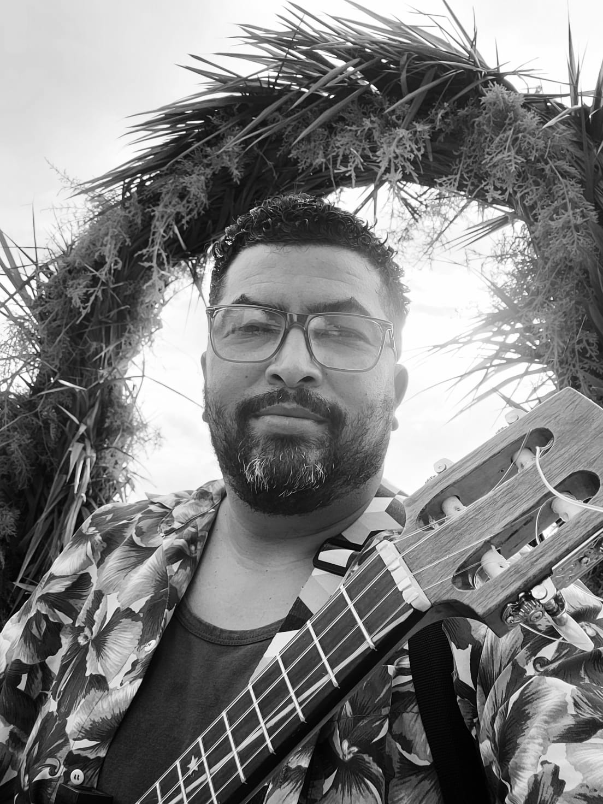
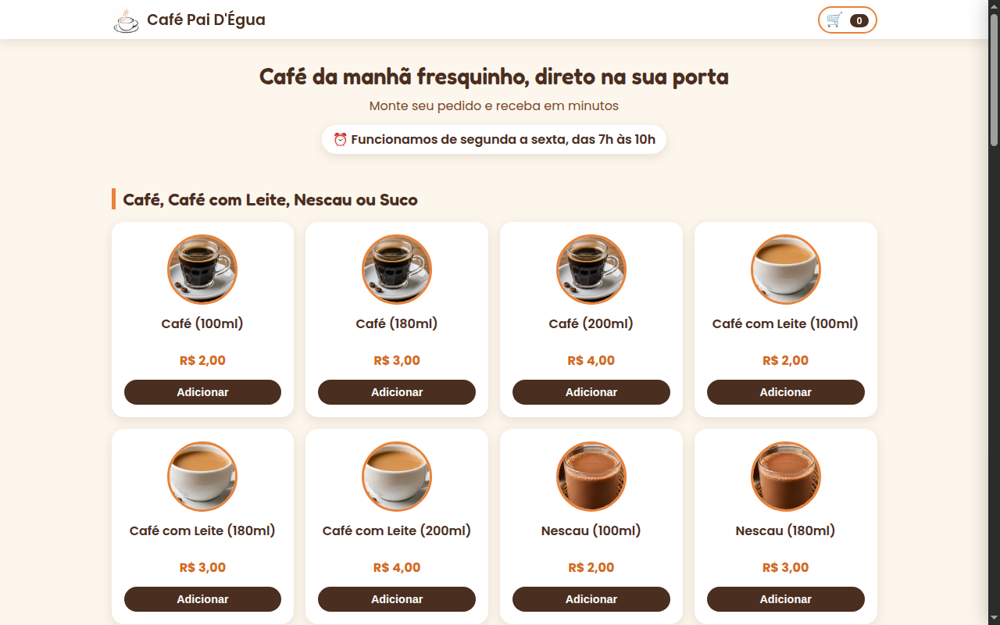
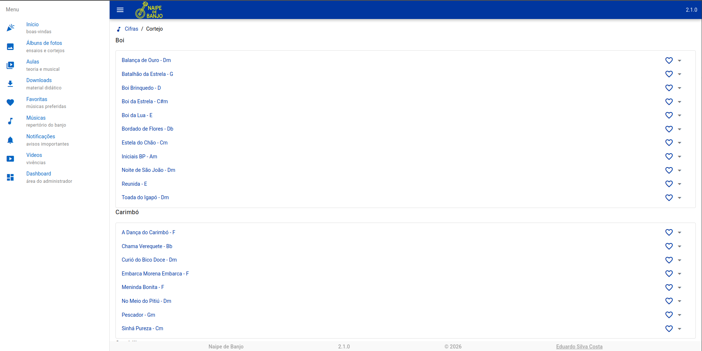
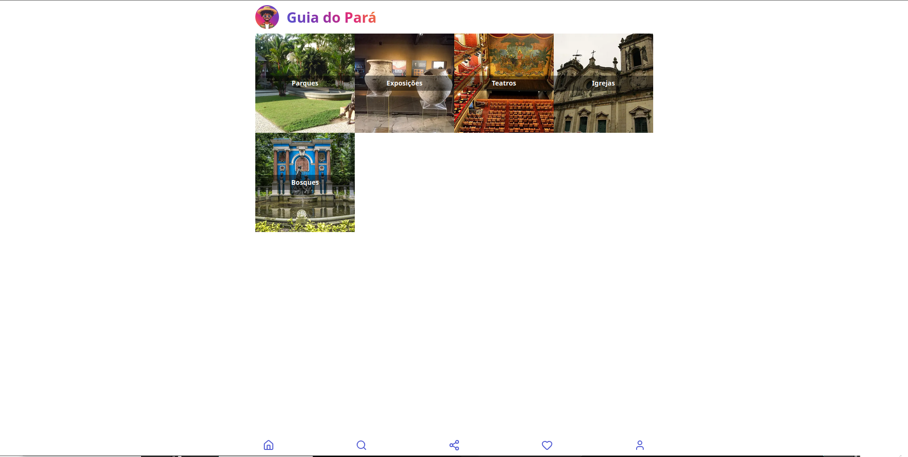
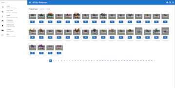
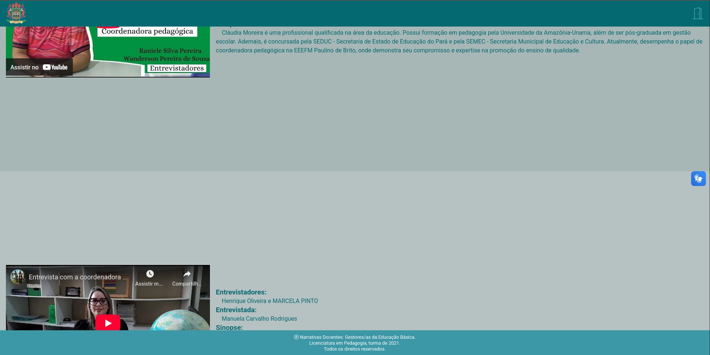
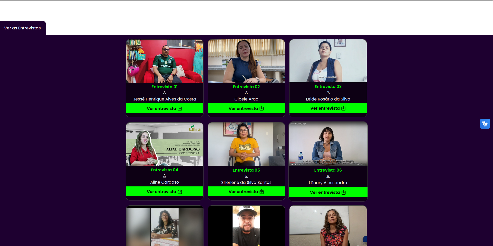

Experiência
Desenvolvo aplicações web com Vue, React e Typescript, e APIs com PHP, Laravel e Node. Trabalho com bancos MySQL, PostgreSQL, Firebase e Supabase. Conheço Docker, Git e GitLab, metodologias ágeis como Scrum e Kanban, e sistemas Linux e macOS.
Montreal Informática
Desenvolvedor Full Stack (alocado na Polícia Civil do Pará)Atuo na sustentação e evolução de sistemas internos utilizados pela Polícia Civil do Estado do Pará, desenvolvendo e mantendo aplicações com Vue.js, PHP e Laravel. Implemento novas funcionalidades a partir de requisitos de negócio, corrijo bugs, trabalho em melhorias de desempenho e participo de testes, homologação e implantação de funcionalidades.
- Vue
- PHP
- Laravel
- PostgreSQL
- Git
- GitLab
- Docker
- Swagger
- Linux
Polícia Civil do Pará
Técnico em Gestão de Informática (PSS)Como desenvolvedor trabalhei com a manutenção e evolução dos sistemas da Polícia Civil do Pará, implementando melhorias e novas funcionalidades para demandas operacionais. Minha função envolveu a criação e manutenção de funcionalidades tanto no front-end quanto no back-end, usando entre outros HTML, CSS, JavaScript, Vue, PHP e Laravel, garantindo que os sistemas fossem eficientes, seguros e atendessem aos requisitos dos usuários. Participei ativamente da análise de requisitos, testes e validação de funcionalidades, além de reuniões de equipe para discutir melhorias e novos projetos.
- HTML
- CSS
- Bootstrap
- JavScript
- JQuery
- Vue
- Quasar
- Vuetify
- PHP
- Laravel
- PostgreSQL
- Git
- Docker
- Swagger
- Asana
- Linux
Amazon Tech Solar – PCT Guamá
Desenvolvedor Mobile (Estagiário)Atuação no laboratório de inovação da Amazon Tech Solar no PCT Guamá, contribuindo para o desenvolvimento de uma aplicação mobile voltada para monitoramento de sistemas de energia solar. Responsável pela integração do front-end, desenvolvido em React Native com TypeScript, com a API, garantindo a comunicação eficiente entre o aplicativo e os componentes de hardware das placas solares. Colaborei no planejamento das entregas, na revisão das implementações e na correção de falhas e melhorias na experiência do usuário.
- HTML
- CSS
- JavScript
- React Native
- Git
- Swagger
Polícia Civil do Pará
Desenvolvedor Web (Estagiário)Durante meu estágio na Delegacia Geral de Polícia Civil do Estado do Pará, tive a oportunidade de trabalhar na DIME - Diretoria de Informática, Manutenção e Estatística, mais especificamente na Divisão de Desenvolvimento de Sistemas. Nesse papel, atuei como desenvolvedor no lado do front-end e do back-end, desenvolvendo sistemas web com Vue.js e Laravel e realizando manutenção evolutiva.
- HTML
- CSS
- Bootstrap
- JavScript
- JQuery
- Vue
- Quasar
- Vuetify
- PHP
- Laravel
- PostgreSQL
- Git
- Docker
- Swagger
- Asana
- Linux
Path Informática
Desenvolvedor FreelancerNa Path, integrei a equipe de desenvolvimento do sistema Harpia. Minha responsabilidade foi criar as interfaces usando React. Trabalhei em colaboração com a equipe de backend, que utilizava Adonis.js, permitindo-me aprender sobre a ferramenta e até contribuir com a criação de rotas. Este trabalho foi uma excelente oportunidade para aprimorar minhas habilidades como desenvolvedor full JavaScript.
- HTML
- CSS
- JavScript
- React
- Prime React
- TypeScript
- Componentização
- Adonis Framework
- Git
UTIC – Empresa Júnior UFRA
Analista de Sistemas (Trainee)- Metodologias ágeis
- Scrum
- Kanban
- Trello
- Levantamento de requisitos
- Briefing
- UX/UI
- Figma
Portfólio

Café Pai D'Égua
Sistema de pedido de café da manhã com carrinho, no estilo iFood, e finalização via WhatsApp.

Naipe de Banjo
Site educacional sobre banjo.

Guia do Para
Site informativo sobre o estado do Pará.

API Pokémon
Api Pokémon + Quasar.

Narrativas Docentes
Projeto sobre relatos e experiências docentes.

Práticas Pedagógicas
Conteúdos sobre práticas educacionais.
Formação
Os cursos de Análise e Desenvolvimento de Sistemas e Licenciatura em Computação me proporcionaram uma base sólida nas áreas de desenvolvimento de software e educação em tecnologia.
-
Em andamento
Licenciatura em Computação
UFRA - 2020 a 2026 -
Tecnólogo
Análise e Desenvolvimento de Sistemas
Estácio - 2018 a 2021
Idiomas
- Português / Nativo
- Inglês / Básico